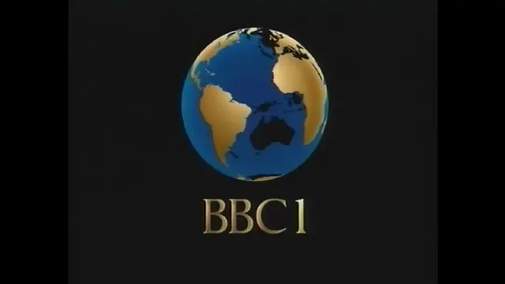
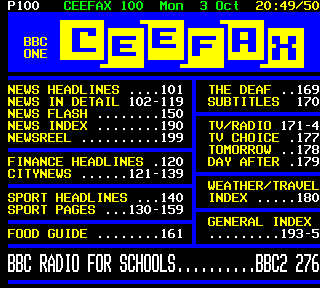
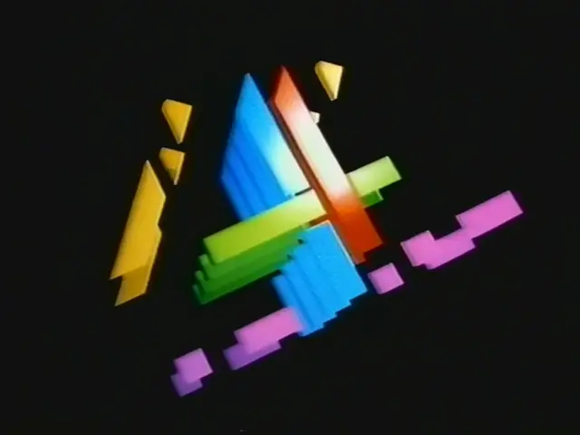
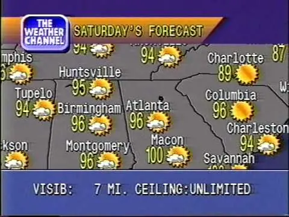
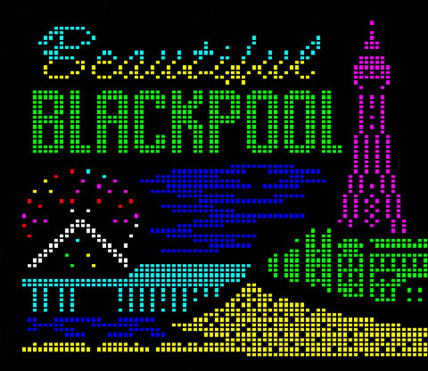
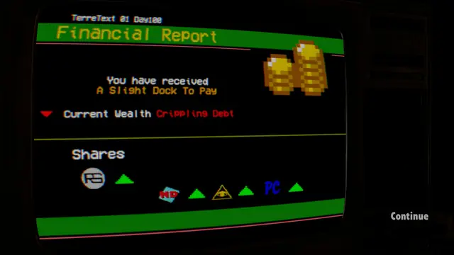
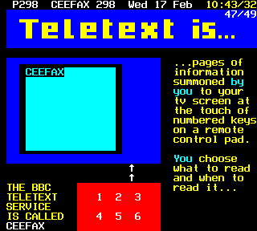
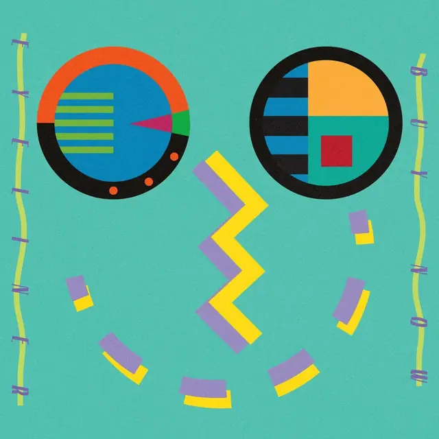
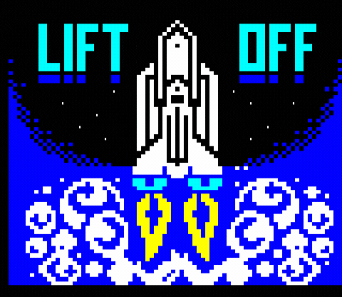

The feel
Signalwave, also called broken transmission, is vaporwave made from old broadcasts: long-lost radio and TV clips, often Japanese and sometimes American, piled one after another until the track feels like channel hopping.1 A gentler relative, sometimes called weatherwave, lays ambient music over 1980s and 1990s Weather Channel broadcasts, setting a distant danger against calming sounds.2
The screens it remembers were built under hard limits. Teletext offered a rigid grid and a few colours floating on black,3 and the Weather Channel's local forecasts were drawn from data feeds by boxes installed at cable companies, without the computing power the job usually needed.4 Those limits are much of the appeal: some teletext artists still choose the format for its restrictions.5,3
- after-hours
- official
- gentle
- blocky
- late-night
- half-remembered
Where it comes from
From 1971 the BBC used a modified Philips PM5544 test pattern alongside Test Card F,6 and in 1974 it started Ceefax, the world's first teletext service.7 Channel 4 opened on 2 November 1982 with Martin Lambie-Nairn's nine coloured blocks that break up and re-form as a 4, animated in Los Angeles because no adequate facilities could be found in Britain,8 and BBC1's first computer-generated globe followed in February 1985.9 The Weather Channel, founded in May 1982, set its forecasts to smooth jazz from the start.2 By 2016 Bandcamp Daily counted signalwave, or broken transmission, among vaporwave's ten most pivotal subgenres.1
Core elements
Eight-colour character grid
A teletext page is 40 columns by 24 rows, plus an optional 25th row for navigation, in eight full-intensity colours: black, red, green, yellow, blue, magenta, cyan and white.10 Each colour change is a control character that takes up its own cell on the grid,5 so two colours on one row normally sit at least a cell apart.10
Mosaic block graphics
Pictures are built from block characters: each cell holds six blocks, two across and three down, sometimes called sixels, which gives 64 patterns.11 Separated graphics leave small gaps between the blocks for a shaded look,11 and the craft is in building intricate images from the most basic means.3
Test card geometry
Test cards were for calibrating cameras and sets, and filled the screen when no programmes were on.12 The first broadcast test card was mostly a circle and frequency gratings, for checking linearity and resolution,6 and Test Card F, from 1967, was the first British test card in colour and the first to include a person.12
Early computer idents
Channel 4's nine blocks, which break up and re-form into a 4, were Lambie-Nairn's picture of "a patchwork of disparate elements coming together to form a whole".8 BBC1's 1985 globe was a translucent blue sphere with gold continents over gold lettering, anti-aliased so its edges stayed smooth.9
Local weather forecast graphics
The Weather Channel's local forecasts came from Weather Star units at cable companies, which turned data feeds into full-screen graphics in banded orange and blue gradients, with smooth jazz underneath.4 In the 1990s Trammell Starks wrote 43 pieces for them, numbered rather than named because he saw them all as background music.2
Sampled TV and radio broadcasts
Signalwave tracks pile old radio and TV clips one after another, flipping between bits of pop-culture history until the listener is disoriented.1 猫 シ Corp. built NEWS AT 11 from snippets of morning news, with the samples cut off "right before they announce the dreadful event", the attacks of 11 September 2001.13
How to do it
Lay out a teletext page
Work on 40 columns by 25 rows: a header row, the page itself and a bottom row for navigation.10,11 Put up to four prompts on that bottom row in red, green, yellow and cyan, one for each coloured key on the remote.10
Leave a cell for each colour change
Control codes show as spaces, and every row starts as white text on black.11 A coloured background costs two cells, the colour and then New Background, for example blue (code 132) followed by 157.11 In graphics mode, Hold Mosaics allows a few colour changes without the gap.10
Draw in sixels
Draw on the 2 by 3 blocks in each cell, and switch to separated graphics for a shaded look.11 For titles use double height, where one row holds the top halves of the characters and the next row the bottom halves.11 Build the pages in an online teletext editor, which works on the real grid.3
Limit flashing
The flash code swaps characters between their colour and the background,10 and the specification's slow rate is 1 Hz.10 Keep flashing to small areas: broadcast guidance rules out more than three flashes a second over a quarter of the screen, and counts any change to or from saturated red as potentially harmful.14
Load pages by number
Ask for a three-digit page number and let the page arrive in its own time, as on teletext, which sent its pages one after another in a carousel, the popular ones more often.15
Animate the ident
Let separate solids break up and re-form into the logo in a variety of ways, as Channel 4's nine blocks did.8 The BBC computed its 1985 globe as 600 fields for one full turn, working in fields rather than frames for smoother motion.16
Build the music from broadcast samples
For signalwave, pile old TV and radio clips one after another until the track feels like channel hopping.1 For weatherwave, run smooth, jazzy music under a forecast and keep the danger in the distance.2
Cheat sheet
Do
- Design each page on purpose. Teletext could show only so much at once, so every page had to get the relevant information across in a lively way.17
- Treat the limits as the brief. Teletext's restrictions forced designers to distil, and they are still much of the attraction for artists.3
- Show the time of day in the last eight characters of the header row, as teletext services usually did.10
- Credit the music you sample. Some vaporwave artists reuse Weather Channel composer Trammell Starks' pieces, sometimes without credit.2
Avoid
- Copying a print layout onto the screen. As Michael Tyler wrote in 1979, printed material "cannot simply be copied" onto a videotex system.17
- Smoothing the pixels away. The Weather Channel's own 2023 retro forecasts are much less bitmapped than the Weather Star originals and shed their 8-bit look.4
- Overcooking VHS and CRT distortion. Jon McKellan, who directed Stories Untold, calls the effect "very easy to overcook" and kept it subtle.18
- Big flashing areas and large fields of fine, high-contrast stripes. Broadcast guidance treats both as risks for viewers with photosensitive epilepsy.14
Tools and tutorials
- edit.tf
Paint real 40 by 25 teletext pages in the browser.
- ZXNet teletext editor
Another full page editor, with export to common formats.
- The Teletext Museum
Hundreds of real Ceefax, Oracle and Teletext pages to study.
- WeatherStar 4000+
A working recreation of the 1990s local forecast, live for any US city.
Palette
Sampled from Ceefax pages, the 1982 Channel 4 blocks and a WeatherStar forecast. The first four are teletext's full-intensity blue, yellow, cyan and red.10
Feel the vibe
Listen
The four-note signature tune under Channel 4's 1982 blocks ident.8
YouTubeTeletext pages with music, the BBC's way of filling gaps in the schedule.7
YouTubeA long signalwave set. Listen for old broadcast clips piled one after another, the habit that defines the genre.1
YouTube猫 シ Corp., whom Bandcamp Daily called mallsoft's greatest exponent, working with t e l e p a t h. Compare his NEWS AT 11, built from morning news snippets.13
YouTube
More references









Games
- Granny's Garden
A BBC Micro adventure for young children, drawn in Mode 7 with colourful teletext graphics and occasional moving pictures.19 Study how much each picture says in sixels.
- Not For Broadcast
You edit the National Nightly News live, bleep the swearing and choose what plays in the ad breaks.20
- TELETEXT
A game set inside a 1995 teletext service, made with advice from Czech Television's teletext editors on how teletext worked at the time.21
- Blippo+
A live-action television experience: channel-surf a staticky alien TV service of soaps, sitcoms, news and weather.22
Film, art and more
- Ceefax
The world's first teletext service, switched off in 2012.7
- Channel 4 idents
Nine blocks that break up and re-form as a 4, by Martin Lambie-Nairn.8
- Philips circle pattern
The PM5544, used widely by set makers and broadcasters, the BBC among them from 1971.6
- WeatherStar
The units at cable headends that turned weather data into the local forecast.4
- Vaporwave: Signalwave
The vaporwave branch built from broadcast clips, also called broken transmission.1
- Teletext Art Research Lab
Today's teletext artists, events and editor guides.
Sources
- 1Genre As Method: The Vaporwave Family Tree, From Eccojams to Hardvapour
- 2Lo-Fi Weather Channel Videos Are Soothing Climate Fears on YouTube
- 3The Creative Legacy of Teletext
- 4Weather Channel jumps back in time for early morning 'retro' forecasts
- 5The Retro Aesthetics of Teletext Art
- 6A Very Concise History of Test Cards
- 7CEEFAX: world's first teletext service
- 8Channel 4 Ident, 1982
- 9COW (Computer Originated World) ident generator
- 10ETSI EN 300 706 V1.2.1: Enhanced Teletext specification
- 11MODE 7 - Teletext
- 12Test Card "F" Generator (Electronic)
- 13The Mall, Nostalgia, and the Loss of Innocence: An Interview With 猫 シ Corp.
- 14Recommendation ITU-R BT.1702-3: Guidance for the reduction of photosensitive epileptic seizures caused by television
- 1550 years of teletext
- 161985 BBC1 - Globe Computer Originated World
- 17The Importance of Connecting Editorial and Engineering in Teletext/Videotex adoption in the UK
- 18Crafting the unique, genre-defying horror of Stories Untold
- 19Toadstools And Dragons In Mode 7
- 20Making Live TV for Not For Broadcast
- 21TELETEXT
- 22Blippo+